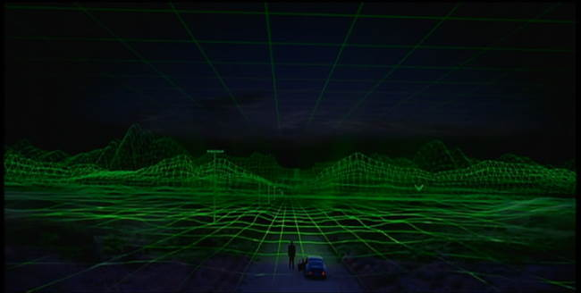
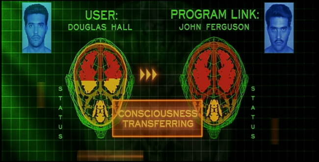
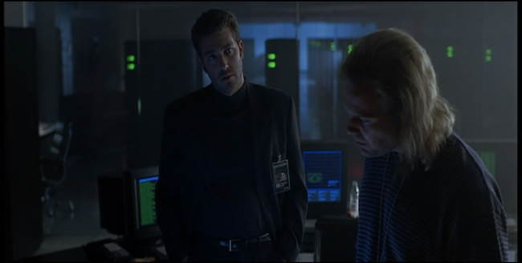
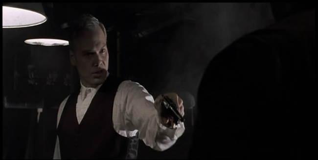

Movie review by : SFAM
Year : 1999
Directed by : Josef Rusnak
Written by : Daniel F. Galouye (book), Josef Rusnak & Ravel Centeno-Rodriguez (screenplay)
Degree of Cyberpunk visuals : Very High
Correlation to Cyberpunk themes : High
Rating : 8/10
Key cast members :

Bad fucking trip? No... These people are real... as real as you and me.
Overview: The Thirteenth Floor is one of the truly fun virtual reality (VR) movies out that have been produced. This movie has everything from a fun film noir settings in a VR simulation, to pure mind fuck scenes, to great VR effects. The story catches you from the beginning and picks up speed as it goes. To top it off, Thirteenth Floor is loaded with style.

The Thirteenth Floor centers on a small R&D software company (located, um, on the thirteenth floor of a large building) that has created a completely realistic similated world that has lifelike VR Sims. Corporate owner and computer scientist Hannon Fuller (played by Armin Mueller-Stahl) discovers a secret so important that he's sure someone is trying to kill him. He hides a message for his protégé, Douglas Hall (played by Craig Bierko), inside of the 1930s game simulation. After Fuller is murdered, things get truly strange. His previously unknown daughter (Gretchen Moi) comes to claim the corporation in order to shut it down, and a Detective (Dennis Heysbert) investigating the murder becomes convinced that Hall is guilty. When Hall, with the help of the lead programmer (played wonderfully by Vincent D'Onofrio), enters the "game" by taking over the consciousness of one of the game sims, he eventually learns the earth-shaking secret. Unfortunately for Hall, one of the game sims has learned it as well, and is not happy about it. At this point, the Thirteenth Floor truly takes off.

The Visuals: The Thirteenth Floor is loaded with high tech visuals in the "real" world and realistic film noir thirties visuals in the simulation. The modern visuals are sleek, with shocking neon greens, blues and reds interwoven into a dark blue-gray environment. Considering cyberpunk comes from a future-noir approach, I found the film noir add-on doubly appealing here.

The Bottom Line: The Thirteenth Floor has a terrific cast and an interesting story that really does work for the most part. While only a few characters are given real depth, the story and effects are able to carry the show. The cinematography is truly terrific, with great use of shadows and interesting lighting contrasts. On top of this, the ending provides us with a very interesting and well done mind fuck that will stay with you for a few days. All in all, Thirteenth Floor also has some nice cyberpunk musings concerning the nature of reality, and whether or not we would really know if it we were actually a part of some game designer's grand simulation.